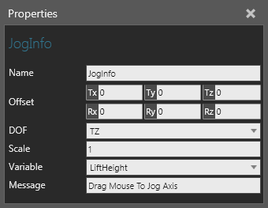

A Jog Info allows you to make an object or property interactive by defining its degree of freedom.

| Name | Description |
| Name | Defines the name of the jog info. |
| Offset | Defines a pivot point (matrix) in the containing node's coordinate system. |
| DOF | Defines the degree of freedom of the jog info, which is either a translation or rotation in a defined axis. |
| Scale | Defines the scale factor for interaction, which in most cases is ± 1 depending on whether the interaction needs to be inverted. |
| Variable | Defines the property or object the jog info makes interactive. |
| Message | Defines a message to be printed when you try to interact with Variable using the Interact or Jog command. |